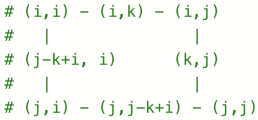

0048-rotate image
问题描述
给定一个n级矩阵matrix表示一个图像。请将图像顺时针旋转90度。
考虑原地旋转图像，即直接修改输入的二维数组，不借助另一个矩阵来旋转图像。
示例1:
输入:
matrix = [[1,2,3],[4,5,6],[7,8,9]]输出:
matrix = [[7,4,1],[8,5,2],[9,6,3]]示例2:
输入:
matrix = [[5,1,9,11],[2,4,8,10],[13,3,6,7],[15,14,12,16]]输出:
matrix = [[15,13,2,5],[14,3,4,1],[12,6,8,9],[16,7,10,11]]示例3:
输入:
matrix = [[1]]输出:
matrix = [[1]]示例4:
输入:
matrix = [[1,2],[3,4]]输出:
matrix = [[3,1],[4,2]]提示:
matrix.length == nmatrix[i].length == n1 <= n <= 20-1000 <= matrix[i][j] <= 1000
代码
自研
class Solution:
def rotate(self, matrix: List[List[int]]) -> None:
i, j = 0, len(matrix) - 1
while i < j:
for k in range(i, j):
matrix[i][k], matrix[k][j], matrix[j][j-k+i], matrix[j-k+i][i] = matrix[j-k+i], matrix[i][k], matrix[k][j], matrix[j][j-k+i]
i += 1
j -= 1
用翻转代替旋转
class Solution:
def rotate(self, matrix: List[List[int]]) -> None:
n = len(matrix)
for i in range(n // 2):
for j in range(n):
matrix[i][j], matrix[n-1-i][j] = matrix[n-1-i][j], matrix[i][j]
for i in range(n):
for j in range(i):
matrix[i][j], matrix[j][i] = matrix[j][i], matrix[i][j]
分析
- 对于行标、列标分别为
row、col的元素matrix[row][col]，在旋转变换作用下将映射到matrix[col][n-1-row]。 - 对于水平翻转结合对称变换，可注意到元素
matrix[row][col]先变换为matrix[n-1-row][col]，再变换为matrix[col][n-1-row]。故水平翻转结合对称变换等价于旋转变换。 - 也可以结合递归思想，由外向内地逐方框进行旋转变换。可以用
i、j分别指向方框的最小行标（最小列标）、最大行标（最大列标）。结合下图可实现旋转变换。 